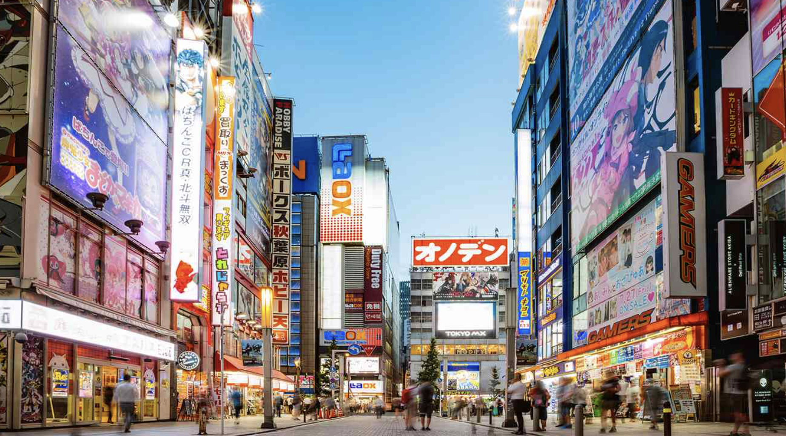

01
Tokyo
Kanto Region
Experience the electric energy of Japan's capital, where neon-lit streets meet ancient temples. Discover world-class dining, cutting-edge technology, and timeless traditions.
Ancient Traditions, Modern Wonders
Explore Japan's most captivating locations
Kanto Region
Experience the electric energy of Japan's capital, where neon-lit streets meet ancient temples. Discover world-class dining, cutting-edge technology, and timeless traditions.
Kansai Region
Step back in time in Japan's cultural heart. Wander through bamboo groves, visit golden pavilions, and witness geisha culture in historic tea houses.
 03
03
Kansai Region
Dive into Japan's kitchen where street food reigns supreme. Experience the warmth of local hospitality, historic castles, and vibrant nightlife along the Dotonbori canal.
Immerse yourself in centuries-old traditions that continue to shape modern Japanese life. From the precise art of the tea ceremony to the serenity of zen gardens, Japan offers experiences that connect past and present.
Witness the changing seasons through hanami cherry blossom viewings, participate in local festivals, and discover the harmony between nature and culture that defines the Japanese aesthetic.
Spring (March-May) for cherry blossoms or autumn (September-November) for fall foliage offer ideal weather and stunning natural beauty.
The Japan Rail Pass provides unlimited travel on JR trains, including most shinkansen bullet trains. Tokyo and Kyoto have excellent subway systems.
Remove shoes when entering homes and temples, bow when greeting, and avoid eating while walking. Tipping is not customary in Japan.